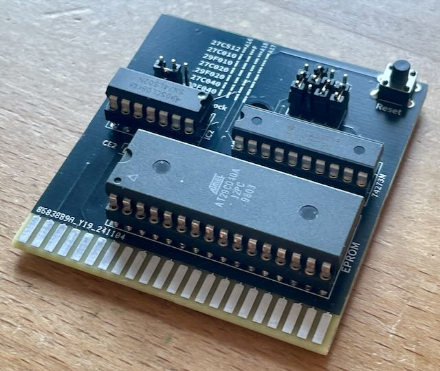
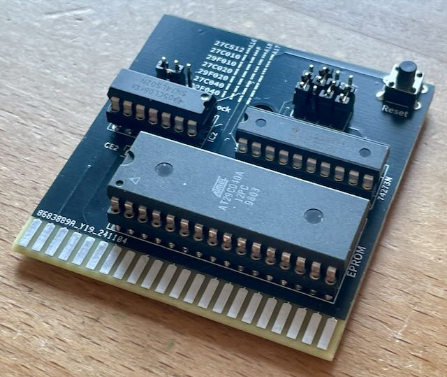
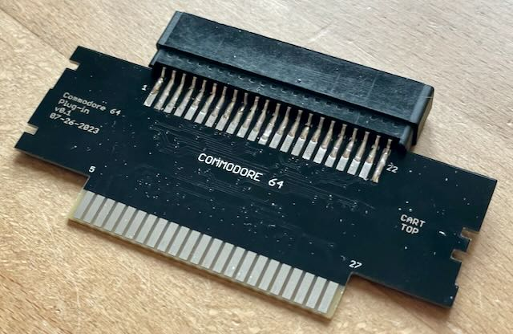
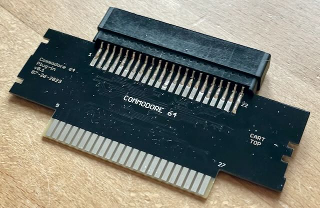

Platinenrestposten
Ich biete hier zum Selbstkostenpreis die überzähligen Platinen aus meinen Bestellungen an, einerseits um meine Kosten niedrig zu halten, andererseits um mehr Leuten Zugang zu interessanten Retroprojekten zu erleichtern.
Bei einigen Platinen kann ich auch Bausätze anbieten. Sofern ich nicht alle Teile lagernd habe, kann es länger dauern, bis ich eine neue Teilebestellung aufgebe, um Portokosten niedrig zu halten. Auch Teilbausätze sind möglich.
Falls jemand nicht löten kann, kann ich einfache Platinen auch fertig aufgebaut anbieten. Auch hier kann es länger dauern, bis ich die Zeit dafür finde und ich würde mich über ein Trinkgeld für den Aufwand freuen.
Bis 75g (2-5 Platinen, je nach Größe) gehen sich noch in einem Kouvert aus, Bestellungen mit mehr oder größeren Platinen oder mit Bausätzen benötigen ein Paket. Es gibt jeweils die Möglichkeit, mit oder ohne Sendungsverfolgung zu verschicken.
| Österreich | €1.50 | €4.— | €3.— | €5.50 |
| Deutschland | €1.90 | €5.25 | €6.50 | €11.15 |
Ein paar generelle Punkte:
-
Der Versand erfolgt aus Österreich, bezahlung per PayPal für Freunde oder Banküberweisung. Bitte vor der Zahlung meine Rückmeldung über Verfügbarkeit und endgültigen Preis abwarten.
-
Dies ist kein Shop sondern mein Hobby, ich mache dabei auch keinen Gewinn. Dementsprechend bitte ich um Rücksicht und Geduld.
-
Die Komponentenpreise sind die Einkaufspreise meiner letzten Bestellung. Wenn ich Teile nachbestellen muß, kann es sein, dass sich die Preise seither geändert haben.
-
Ich verwende Präzesionssockel (die mit den runden Löchern). Ich habe auch ein paar Federsockel, falls jemand die lieber hat.
-
Ich bin flexibel, auf Sonderwünsche gehe ich, soweit möglich, gerne ein. Ernst gemeinte Fragen sind immer gerne willkommen.
Bei Interesse oder Fragen einfach eine PM an dillof auf Forum64 oder per email an pcbs@tpau.group.
Commodore
Commodore 64
Commodore 128
Commodore 16, Plus/4
Commodore VC-20
Commodore Amiga
MOS KIM-1
Andere Heimcomputer
Atari 8-Bit
Amstrad CPC
BBC Micro
Commander X16
Microsoft MSX
Sinclair ZX Spectrum
Tandy Color Computer, Dragon 32
Texas Instruments TI-99/4A
Triumph-Adler Alphatronics PC
Cody
Spielekonsolen
Atari 2600
Atari 5200
Atari 7800
Atari Lynx
Moderne Geräte
Development
Computer
Open Source Cart Reader
 Userport DS-3231 RTC Modul
Userport DS-3231 RTC Modul
 16k Modul
16k Modul
 Atari 2600 Keyboard Controller
Atari 2600 Keyboard Controller
 Cardko Cardkey 1 Keypad
Coplin Keypad
Cardko Cardkey 1 Keypad
Coplin Keypad
 Coplin Keypad mit MX Tasten
Coplin Keypad mit MX Tasten
 DD-001 Floppy Controller Modul
DD-001 Floppy Controller Modul
 Easyflash 3 Modul
Magic Desk Modul
Easyflash 3 Modul
Magic Desk Modul
 SuperClone 5.0 Modul
SuperClone 5.0 Modul
 SuperPad64 auf Ninja SNES Pad Adapter
SuperPad64 auf Ninja SNES Pad Adapter
 Trap Them Adapter
Trap Them Adapter
 Wheel of Joy Mini Multiplayer Adapter
Wheel of Joy Mini Multiplayer Adapter
 Wheel of Joy Multiplayer Adapter
Open Source Cart Reader Commodore 64 Adapter
Wheel of Joy Multiplayer Adapter
Open Source Cart Reader Commodore 64 Adapter